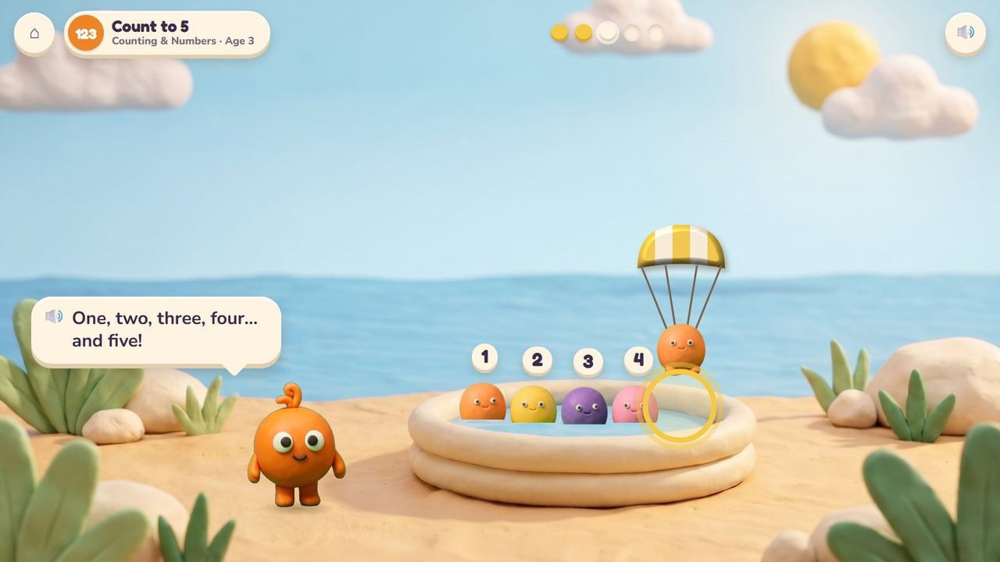
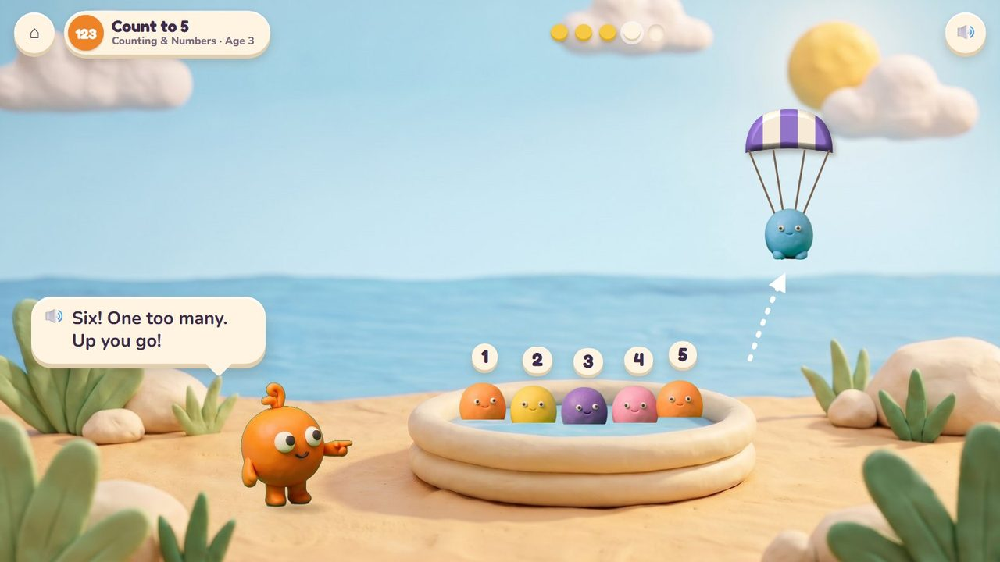
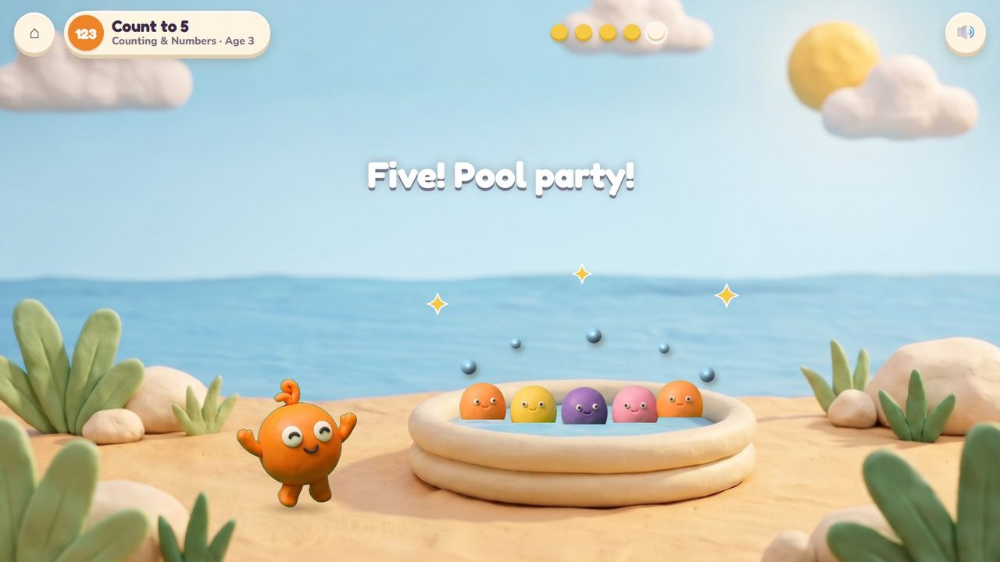
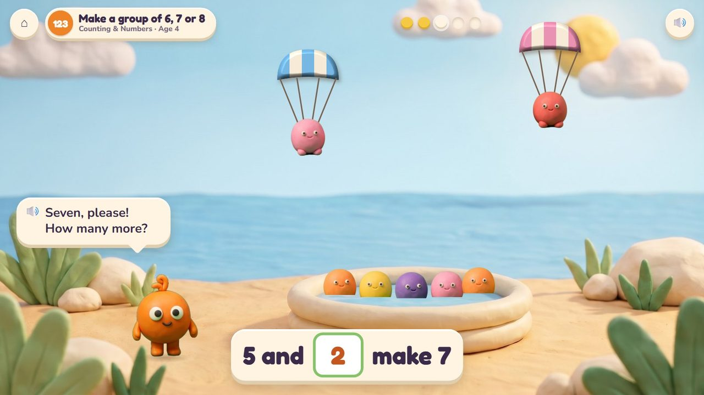
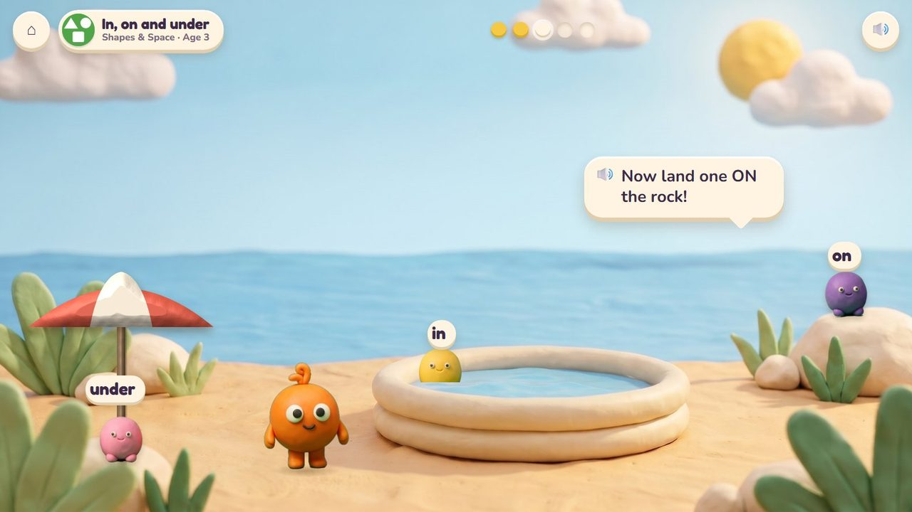

Peep Parachutes
Tap the sky: Peeps float down on parachutes, and Pom counts every landing.
10 lessons (10 taught here first, the rest practised here) in 3 topics:
Counting & NumbersAdding & Taking AwayShapes & Space

The game
Pom is having a pool party and needs a number of Peeps. The child taps the sky and a Peep floats down under its little clay parachute; Pom counts each landing aloud. One too many and it floats back up; the right number, and the party starts with a splash. Later the Peeps land in, on and under things, so position words come too.
Hands-on
Tap the sky to drop a Peep; tap a Peep to send it back up.
The end of a round
The pool party: the Peeps splash, and Pom jumps for joy.
How it plays
A storyboard of the game in one lesson, drawn from the app's own clay pictures.
1Five for the party
Count to 5, age 3: two Peeps in the pool; tap the sky for the next one.
🔊 “Five Peeps for my pool party! Tap the sky.”

2Pom counts
Every landing is counted aloud: four… and five!
🔊 “One, two, three, four… and five!”

3One too many
A sixth Peep floats back up on its parachute.
🔊 “Six! One too many. Up you go!”

4Pool party
Five in the pool: splash!
The quick round (from age 6)
No clock: the youngest play calmly (ages 3 to 5). Ten questions at 6-7, a 60-second round from 8; your time and your best on screen; only right answers count; a miss shows the answer and comes back later. No clock under 6.
The same game, other lessons and ages
The badge at the top left says the topic, the lesson and the age.

5Make a group of 6, 7 or 8 · age 4
Seven, please: five in the pool, two still in the sky. 5 and 2 make 7.

6In, on and under · age 3
One lands in the pool, one on the rock, one under the umbrella.
From age 3 to 5
| Age 3Pre-school | Count to 5; one more; some more come; in, on and under. |
| Age 4Pre-K | Count to 10; make a group of 6, 7 or 8; one more, one fewer; above, below, beside. |
| Age 5Kindergarten | Count out a number to 20; where is it? |
What changes from lesson to lesson
Numbers
up to 5 at 3, 10 at 4, 20 at 5
Where they land
the pool, a rock, under the umbrella, beside Pom
Help
Pom counts aloud; the empty places in the pool glow
How you answer
taps only: the sky, a Peep, a place
Its 10 lessons
Age by age they are on the full list; here grouped by topic (the first activity named teaches a lesson, the others practise it).
Counting & Numbers 6
- Count to 5
early yearsPeep Parachutes · Poke Pals - One more
early yearsPeep Parachutes · Poke Pals - Count to 10
early yearsPeep Parachutes · Poke Pals - Make a group of 6, 7 or 8
early yearsPeep Parachutes · Poke Pals - One more, one fewer
early yearsPeep Parachutes · Poke Pals - Count out a number
K.CC.5Peep Parachutes · Poke Pals
Adding & Taking Away 1
- Some more come
early yearsPeep Parachutes · Poke Pals
Shapes & Space 3
- In, on and under
early yearsPeep Parachutes · Poke Pals - Above, below, beside
early yearsPeep Parachutes · Critter Maker - Where is it?
K.G.1Peep Parachutes · Critter Maker
Questions
- Is tapping the sky clear enough for a 3-year-old, or should a cloud button drop each Peep?
- Anything in the storyboard to change (say the frame number)?